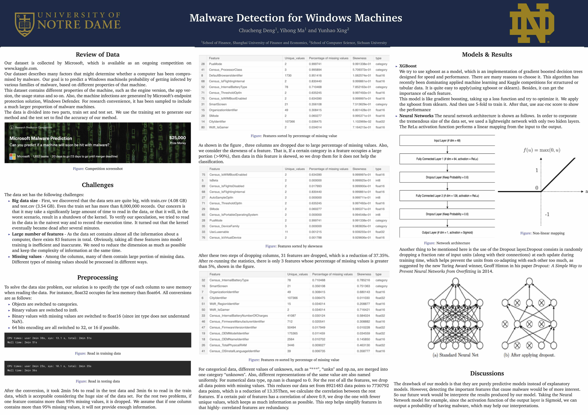
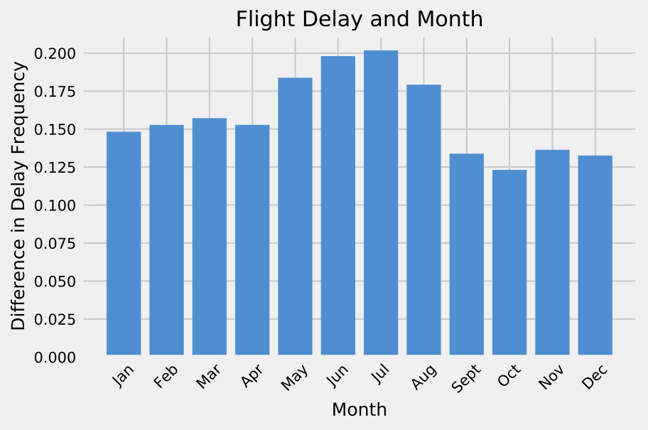
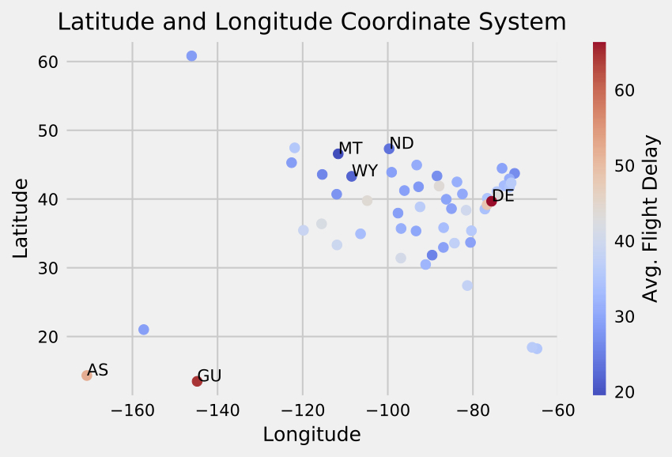

Selected Projects
Shooting Game Software
 |
(course project for CSE 20311 - Fundamentals of Computing) I led a group of two and designed a shooting game software with beautiful UI. It was developed with C++. Main functions include:
|
Malware Detection for Windows Machines
|  |
(course project for CSE 40647 - Data Science) I led a group of three and implemented machine learning algorithms for detecting malwares in Windows machiens. It was written in Python. Please check the poster on the left. Main work include:
|
A Case Study for US Flight Delays and Cancellations
|  |  |
(course project for ITAO 30210 - Data Analysis with Python) I led a group of two and conducted a case study for US flight delays and cancellations from a data scientist's point of view. Main work include:
|